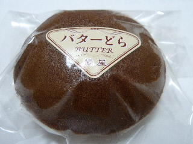

橘屋のバターどら
2014/07/21
バターどら焼き154円です。
なにげに値段書いていますが、これって税金があがればドンドン変わるんですよね。
そう思うと、税込154円よりも税別143円の方がいいのかな？うーん。

商品ですが、バターどら焼きなのでバターは当然あります。
どら焼きの餡の上に、固形のバターがありました。
固形バターを和菓子で使うってなんか斬新です。
パンにバターみたいな感じで、どら焼きの生地とバターもよく合いますね。
バター味と甘い餡で、濃い味のどら焼きでした。